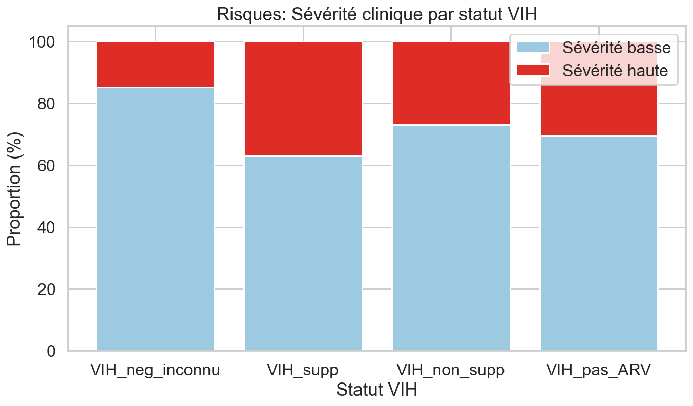
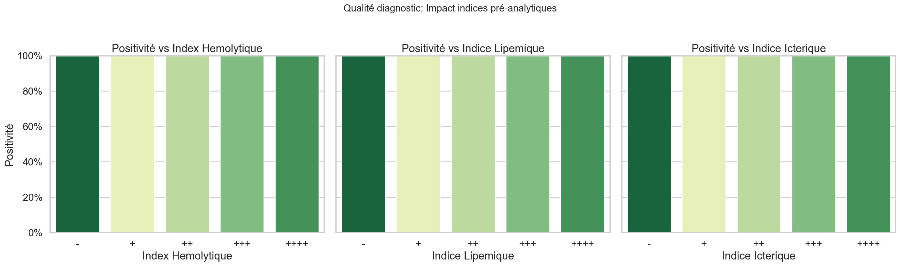
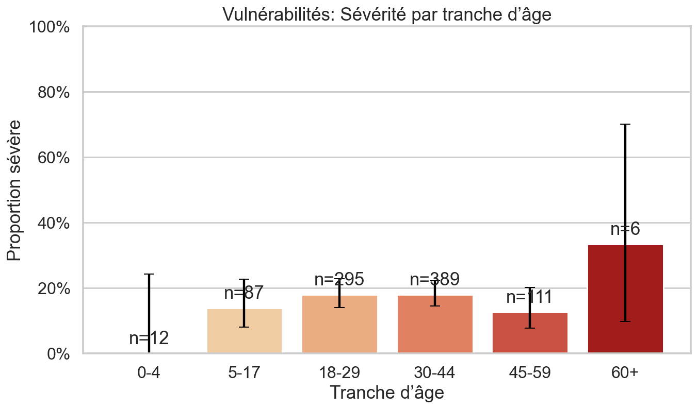
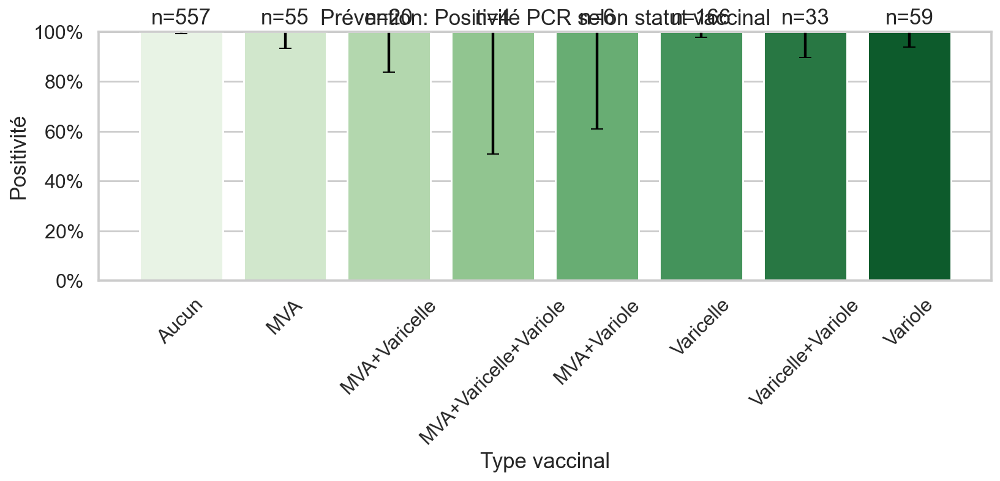
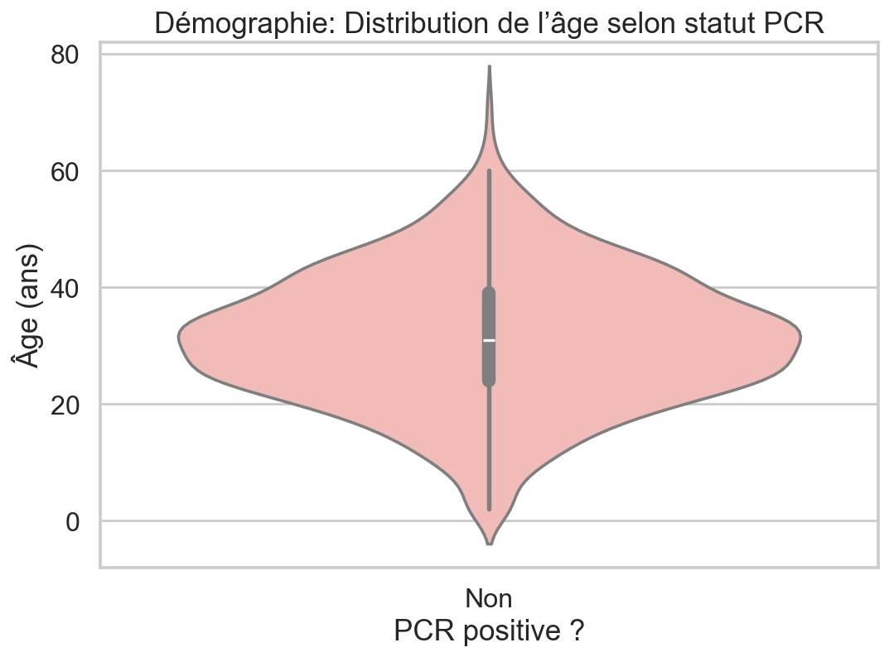
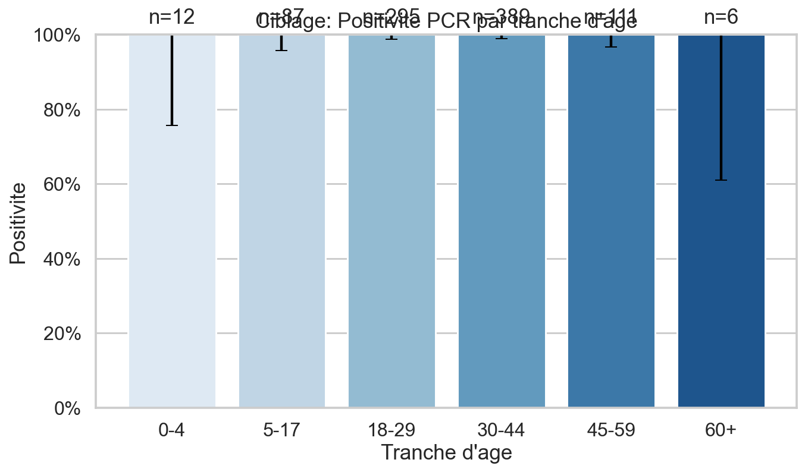
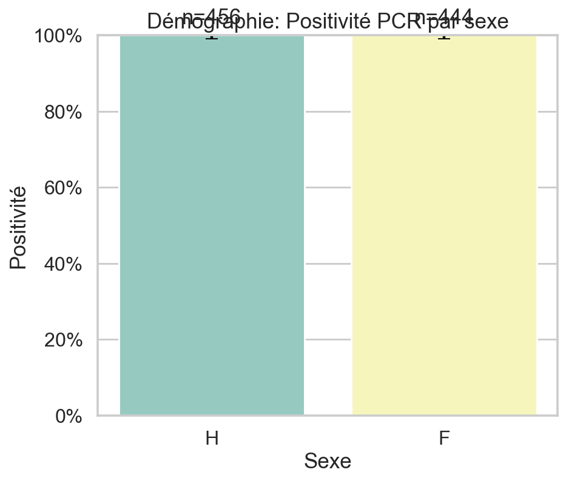

Dashboard MPXV - Données synthétiques
Surveillance et Diagnostic
01_surveillance_incidence_positivite_semaine.png

02_diagnostic_positivite_par_type.png

Infectiosité et Transmission
03a_infectiosite_ct_vs_delai_scatter.png

03b_infectiosite_ct_vs_delai_box.png

09_infectiosite_nb_localisations_lesions.png

10_transmission_positivite_par_mobilite.png

13_transmission_nb_localisations_par_charge_virale.png

Identification et Risques
04_identification_nb_symptomes_par_statut.png

05_risques_severite_par_vih.png
08_qualite_indices_preanalytiques.png
12_vulnerabilites_severite_par_age.png
Prévention et Démographie
06_prevention_positivite_par_vaccin.png
07_demographie_age_par_statut.png
11_ciblage_positivite_par_age.png
14_demographie_positivite_par_sexe.png
